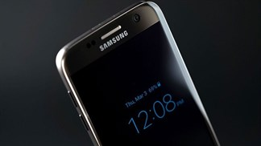
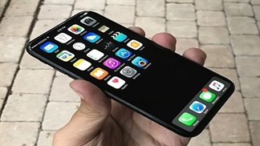

|  |
Galaxy S8 đọ dáng cùng với S8 Plus trong những hình ảnh rò rĩ mới nhất Cho đến thời điểm này chúng ta đã nắm được rất nhiều những thông tin rò rỉ khác nhau về cặp smartphone sắp ra được ra mắt của Samsung, đó là Galaxy S8 và S8 Plus. Và vừa mới đây... |
|
Galaxy S8 được dự báo sẽ còn bán chạy hơn cả đàn anh S7! Cho đến thời điểm này chúng ta đã nắm được rất nhiều những thông tin rò rỉ khác nhau về cặp smartphone sắp ra được ra mắt của Samsung, đó là Galaxy S8 và S8 Plus. Và vừa mới đây thì có một nguồn tin lại tiếp tục tung ra những hình ảnh mới nhất về cặp đôi nổi tiếng này cho chúng ta trên trang mạng. |
|  |
Apple đã giàu nay còn giàu hơn với iPhone 8 Một trong những nhân vật dự đoán nổi tiếng thuộc viện Morgan Stanley, nhà phân tích Katy Huberty cho biết iPhone 8 sẽ là một thiết bị rất hấp dẫn, khiến người dùng phải "vội vã" nâng cấp ngay. Đem lại nguồn thu không nhỏ cho Apple. |
|
Cách mở khoá iPhone khi nhập sai mật khẩu quá nhiều lần Để bảo mật tốt hơn cho người dùng, iPhone sẽ tự động khoá thiết bị nếu nhập mật khẩu khoá màn hình sai quá nhiều lần. Lúc này thiết bị sẽ bị vô hiệu hoá và xuất hiện dòng chữ iPhone is disabled cùng khoảng thời gian khoá trên màn hình. Tuy nhiên nếu không đợi được cho tới khi hết thời gian, bạn vẫn có thể khôi phục dễ dàng. |
Địa chỉ: Phòng , Lầu 3, Tòa nhà Inovation công viên phần mềm Quang Trung Q.12 TP HCM
CSKH: (04) 1080
Khiếu nại góp ý: 0987654321
Tìm chúng tôi trên facebook